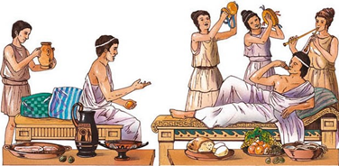
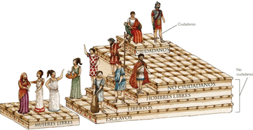
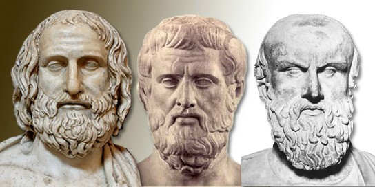
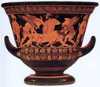
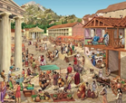

HECHA POR TODAS | 20/05/2022
En este blog podrán encontrar información acerca de la vida en La Antigua Grecia a través de distintas perspectivas y puntos de vista, desde una visión filosófica de la psicología, sus relaciones interpersonales, hasta un aspecto economico de su cultura como el comercio.
La cultura de la antigua grecia es increiblemente amplia, tanto que durante el paso del tiempo y hasta el dia de hoy sigue siendo estudiada y analizada por grandes pensadores gracias a sus obras filosoficas, artisticas, sociales y economicas, siendo considerada asi un legado para la cultura occidental.
En este blog podrán conocer y analizar las diferencias y similitudes que existen entre la vida que se llevaba en la Edad Antigua y la que vivimos hoy en día, todo esto con ayuda de los tres artículos publicados que abarcan distintos temas y opiniones, con ayuda de material visual y actividades didácticas que apoyaran a los lectores en la búsqueda de un aprendizaje enriquecedor, de una manera sencilla y capturadora.
Realizar este proyecto fue un gran aprendizaje para todas nosotras ya que se nos permitió conocer y analizar las distintas épocas por las que ha pasado el ser humano, y como estas van cambiando e incluso evolucionando año con año a través de sus distintos contextos, perspectivas y personajes.
Esperamos que este blog pueda ayudar a todos ustedes a comprender y analizar una cultura tan grande y con antecentes historicos tan amplios como lo es la cultura griega. En apoyo de estos articulos podran diferenciar los aspectos que han ido cambiado durante el paso del tiempo, asi como el origen y las raices de muchos aspectos que hasta el dia de hoy estan presentes en nuestra sociedad.
Agradecemos a los lectores y esperemos disfruten estos artículos tanto como nosotras disfrutamos realizarlos.
Daniela Paola Flores Gurrola | 20/05/2022
En este artículo exploraremos a cerca de como eran las relaciones sociales e interpersonales en la Grecia Antigua, ya que existen muchos cambios desde la edad Antigua hasta la actualidad, desde su forma de experimentar el amor, el trato distinto que se les daba a las mujeres y como estas no poseían derechos políticos, hasta la existencia de esclavos, quienes estaban descobijados de cualquier tipo de derecho humano. A continuación, aterrizaremos más a fondo cada una de estas relaciones, para así poder comprender, como es que las personas, con la evolución y el pasar del tiempo, hemos cambiado nuestra forma de relacionarnos con las demás personas.
Comenzaremos hablando de como los griegos experimentaban el amor, En la antigua Grecia existía una marcada división entre el amor y el matrimonio, ya que el matrimonio era el acto o deber que debía cumplir el hombre ciudadano al desposar a una mujer, pero este podía ser por el simple hecho de el deber y no se veía involucrado con temas amorosos o sentimentales, sin embargo, existía una ley de Solón, la cual establecía que el esposo debía cohabitar mínimo tres veces al mes con su esposa (Duce, 2017).
Las relaciones sexuales en la Antigua Grecia eran consideradas, un desequilibrio y una lucha de fuerzas en la que el hombre se debería ver imponente y dominante ante la mujer, ya que se creía que las mujeres disfrutaban más las relaciones sexuales que los hombres, es por esto por lo que existían problemas en el sexo marital, ya que para ellos no era una buena idea combinar un deber político como el matrimonio, con algo tan desequilibrante como lo era el sexo.
Una vez que ya tocamos el tema de como las mujeres eran consideradas peligrosas y desequilibrantes cuando se sentía que podían llegar a tener un poco más de poder que el varón, profundizaremos en el tema de como era el trato hacia las mujeres y como es que se interactuaba con ellas. Habrá que comenzar diciendo que las mujeres en la Grecia Antigua no contaban con derechos políticos ni sociales, como lo hacían los varones, también cabe mencionar que estaban totalmente sometidas por los varones y sus decisiones o movimientos individuales eran nulos, su único papel en la sociedad era el de ser esposa y madre y vivir alejada de la sociedad, las mujeres de clase acomodada salían muy pocas veces de su casa y lo hacían a lugares específicos designados para ellas (Muñoz, 2021).
Los esclavos en la Grecia Antigua eran las personas con clase social más baja, a quienes se les quito su libertad por completo. Por lo general, en Atenas, los esclavos eran normalmente bárbaros nacidos en tierras lejanas, por distintas razones, algunos de ellos fueron capturados por Piratas, otros vendidos por sus familias, entre otras causas (National Geographic 2014).
Los esclavos no tenían un trabajo en particular, ya que, podían trabajar como policías, ayudando en los talleres de artesanos, haciendo trabajos de mano de obra o incluso existían los esclavos domésticos, los cuales eran de cierta forma integrados a la familia, ya que se les otorgaba un nombre, algunas veces se les permitía unirse a ciertas fiestas, comer con sus amos y tener un día libre (Buzo).
Me gustaría concluir este articulo reflexionando a cerca de cuanto han cambiado las relaciones sociales e interpersonales a lo largo del tiempo y claro, dependiendo de la cultura, ya que si bien en la actualidad, algunas veces podemos encontrar ciertos casos en los que se les otorga superioridad al hombre, se esta luchando para que esto no sea más así y se busca la equidad, algo que las mujeres en la Antigua Grecia jamás hubiesen imaginado, ya que no se les permitía alzar la voz. De igual forma me parece muy interesante la forma en la que ellos vivían el amor heterosexual, ya que a la mujer que disfrutaba del sexo se le veía como un peligro y desequilibrante para la sociedad, por lo que preferían no mantener relaciones sexuales maritales, algo que en la actualidad sería muy extraño presenciar, ya que se ha normalizado y se le ha ido quitando el tabú al deseo y el placer sexual femenino. Me gustaría hablar a cerca de los esclavos, lo que a mi parecer es un atentado contra los derechos y la dignidad humana que poseemos todos los seres humanos desde el nacimiento, si bien aún se cometen actos de injusticia, me parece excelente que se haya buscado erradicar con la esclavitud humana, a mi parecer, una tortura y perdida de la libertad.
Duce, E (2017) EXPRESANDO EL AMOR: LA AFECTIVIDAD EN EL MUNDO GRIEGO ANTIGUO. Universidad Autónoma de Madrid. https://www.ucm.es/data/cont/docs/106-2017-05-02-7.%20Duce%20Pastor.pdf
Muñoz, M. (2021). La mujer en la antigua Grecia. México Social. https://www.mexicosocial.org/la-mujer-en-la-antigua-grecia-clasica/#:~:text=La%20mujer%20en%20la%20antigua%20Grecia%20solo%20ten%C3%ADa%20como%20papel,cultura%20occidental%20hasta%20nuestros%20d%C3%ADas
National Geographic (2014). National Geographic. https://historia.nationalgeographic.com.es/a/esclavos-atenas-vida-sin-libertad_8005#:~:text=La%20gran%20mayor%C3%ADa%20de%20los,convert%C3%ADan%20en%20un%20valioso%20bot%C3%ADn
Buzo, I. Sociedad de Grecia. Recursos de Ciencias Sociales, Geografía e Historia. http://contenidos.educarex.es/sama/2010/csociales_geografia_historia/primeroeso/tema9/grecia_sociedad.html
1) ¿En qué consiste la ley de Solón?
2) ¿Cómo era la vida de las mujereres en la Antigua Grecia?
3) ¿Quiénes eran las personas de clase social más baja en la Antigua Grecia?
4) ¿Cómo eran consideradas las relaciones sexuales en la Antigua Grecia?
5) ¿Cuáles eran algunas de las causas por las que los esclavos llegaban a Atenas?
Monserrat Pineda Domínguez | 21/05/2022
En el siguiente artículo se hablará de la psicología relacionada por filósofos socráticos que existieron y tuvieron un lugar muy importante en la Antigua Grecia, gracias a ellos se lograron aplicar nuevos términos que ayudarían así a entender un poco más la conducta del ser humano.
La psicología es a ciencia que estudia los procesos mentales y las conductas, esto con el objetivo de explicar, entender e incluso modificar ciertos pensamientos y conductas de la persona. De igual forma, uno de los propósitos de la psicología, es que la persona se cuestione y se dé cuenta de lo que está viviendo, y de las conductas que quiere intentar cambiar.
La psicología tuvo un lugar en Europa, en Grecia, entre los siglos 8 y 10 antes de Cristo, aquí va empezando la sistematización de esta. Manuel Alva (2018)
Jorge Toledo (2013), dice que la psicología para los antiguos griegos fue muy importante, ya que esta se encargaba de centrarse en la naturaleza del ser humano, y de cómo funciona el pensamiento de la persona.
La cultura griega conto con varios exponentes que fueron filósofos que fueron muy importantes para el desarrollo de la psicología, a estos tres, se les llamaban los socráticos:
Sócrates: El trato el tema de los sentimientos y su relación con las actividades intelectuales y físicas, gracias a ello, construyó un método de reflexión que se caracterizaba en cuestionamientos sistemáticos, el cual iba a ayudar a encontrar el conocimiento que se encontraba dentro de cada persona. Manuel Alva (2018)
Un discípulo muy importante era Platón: este filósofo se concentró en hablar sobre los sueños y la motivación oculta que existe dentro de los recuerdos de las personas. Este es el caso que se acercó más al actual término “inconsciente”. Él es el que inicia con lo que ahora muchos conocen como “el conocimiento del alma”. Manuel Alva (2018)
El blog de Entorno Estudiantil (S.F) menciona que entre Sócrates y su discípulo Platón, reflexionaron sobre la psicología la cual ellos conocían y llamaban como “psique” y como está tenía que ver con el alma.
Después, el discípulo de Platón, Aristóteles, el cual el doctor Eduardo Aguirre (2017) menciona, que este analiza la cuestión entre mente y alma, y entonces esto le permite llegar a cabo una relación entre percepción y mente. Al igual, se enfoca en hacer estudios que tengan que ver sobre la memoria. Aristóteles es el que plantea el estudio entre estímulos y respuestas en las acciones de las personas, lo cual es muy importante para la psicología. Algo que se tiene que resaltar es que Aristóteles veía el alma como la máxima actividad que podía hacer el cuerpo de los seres humanos, y a esta le puso por nombre como “realidad”.
Manuel Alva (2018), dice que estos tres filósofos socráticos se caracterizaban por sus buenas obras, al auto conocerse y actuar forma adecuada. Para ellos, el conocimiento provenía del alma, y que la persona como tal, está constituida en tres: en cuerpo, razón y alma
Alva M. (2018). La psicología en la Edad Antigua. El Blog de Historia de la Psicología.
Aguirre E. (2017). Aristóteles, la filosofía y la psicología. Desde el estudio del alma a la colonización de subjetividades.
Entorno Estudiantil. (S.F). Los Aportes de los filósofos a la Psicología. Toledo J. (2013). Alma y filosofía en la antigua Grecia
| P | S | I | C | O | L | O | G | I | A | M | T | P | A | O | M | N | E | A |
| L | E | O | Y | A | A | A | T | E | R | Q | V | B | M | J | E | K | D | N |
| A | I | P | C | W | A | E | H | J | A | R | O | Y | E | B | N | W | F | T |
| T | Y | I | E | C | O | T | F | G | S | D | U | O | R | G | T | S | F | I |
| Ó | T | F | R | E | R | E | A | O | S | A | Y | E | Y | E | E | D | T | G |
| N | I | A | E | Y | T | A | C | D | S | G | R | D | R | U | T | F | H | U |
| E | U | A | E | U | A | I | T | S | S | U | D | A | P | G | T | F | E | A |
| D | T | M | A | I | T | T | E | E | F | F | G | A | H | R | G | T | I | G |
| F | E | A | I | A | T | Y | R | H | S | T | B | S | H | I | E | Y | U | R |
| C | A | R | R | O | R | U | R | F | F | U | J | T | H | E | A | U | O | E |
| U | A | C | I | U | A | G | F | U | Y | J | D | U | S | G | A | I | G | C |
| I | O | T | U | O | A | A | L | M | A | M | G | U | Y | O | U | K | P | I |
| S | I | A | M | M | O | E | E | T | R | M | I | O | U | S | I | L | D | A |
Nicole Aceves Orellana | 21/05/2022
Es increíble analizar la cultura griega, como muchos sabemos los griegos destacaron en muchos ámbitos como la filosofía, matemáticas e incluso el arte, pero un aspecto que no debemos olvidar es el económico, esta civilización influyó mucho en la cultura romana, pero a diferencia de estos la economía en Grecia fue mucho más estable y próspera.
Los inicios de la economía en Grecia fueron con actividades tan simples como la agricultura y ganadería, esto debido a su ubicación geográfica y su clima.
La agricultura fue la base de todo debido a que la mayoría de su población se dedicaba a esto, principalmente al cultivo de cereales, en la cuestión de ganadería se dedicaban a la crianza de animales como cerdos y ovejas, el único impedimento era que los territorios griegos eran muy montañosos por lo que los animales no podían pastar con comodidad, por lo que los griegos empezaron a colonizar nuevos territorios en donde poder llevar en práctica esta actividad sin problema alguno.
Otra de sus actividades por excelencia era la fabricación de artesanías, la cerámica en donde destacaban por la belleza de sus obras y los detalles y dedicación con las que las fabricaban, así como el buen manejo del metal los llevó a la fabricación de armas de guerra como espadas, escudos y yelmos.
Los griegos poco a poco fueron abriendo sus horizontes por lo que no en mucho tiempo empezaron con el comercio de mercancías y era una de sus principales fuentes de ingreso sino es que la más fuerte, ellos decidieron arriesgarse y empezar con el comercio vía marítima, cabe mencionar que la zona geográfica de Grecia fue una gran ventaja debido a que tenía apertura a muchos otros lugares, los principales productos que exportaban eran el papiro, cerámica, armas e incluso esclavos, ya que en esta época era una actividad muy normal el comercio de personas, que principalmente eran guerreros enemigos capturados, haciendo comercio principalmente con los territorios de Egipto e Italia.
La economía en Grecia llegó a ser tan próspera que con el tiempo empezaron a hacer sus primeros préstamos que principalmente eran para costear expediciones y eran emitidos por bancos privados.
Un aspecto que no hay que olvidar es el cobro de impuestos, estos eran recaudados por los reyes y su principal función era para la restauración de templos y el ejército, manejan distintos tipos de impuestos como impuestos aduanales y de carga, por espacios marítimos o de tierras e incluso impuestos en esclavos o cosas como el vino y algunos cereales, sin olvidar los botines de guerra que contenían esclavos o materiales preciosos.
Recordemos que Grecia era una comunidad sumamente organizada por lo que tuvieron una gran visión en cuestiones económicas por lo que llegaron a tener una economía sumamente próspera y duradera, empezaron desde prácticas comunes hasta ampliarse y tener una logística de exportación increíble, no por nada llegaron a tener una de las organizaciones marítimas más grandes de la antigüedad, alrededor del año 600 a.c empezaron con el manejo de monedas como letra de cambio, estas monedas al principio eran fabricadas con materiales muy caros que tiempos después fueron cambiadas por materiales como el bronce que era menos costoso.
La economía de la antigua cultura griega fue tan próspera que tiempo después fue la inspiración para muchas comunidades y culturas, entre ellas la Romana.
Los griegos son un claro ejemplo de lo que es una cultura organizada y visionaria, así como lo que es el buen manejo de sus recursos como animales, granos, piedras preciosas, personas hasta sacar provecho de su ubicación geográfica y clima de una manera increíble.
F. (2022, 4 mayo). ¿Cómo era la economía en tiempos de la antigua Grecia? Mafius. Recuperado 16 de mayo de 2022, de https://www.mafius.com/historia/economia-en-tiempos-de-la-antigua-grecia/
R. (2018, 4 julio). ECONOMÍA GRIEGA » Evolución y avances de su actividad comercial. Cultura. Recuperado 16 de mayo de 2022, de https://www.cultura10.org/griega/economia/
1) Eran principalmente para costear expediciones
2) Destacaban en esta actividad gracias a los detallets con lo que lo hacían
3) Material del que eran hechas las monedas
4) Cultura que usó de inspiración a los griegos
5) Se dio gracias al buen manejo del metal